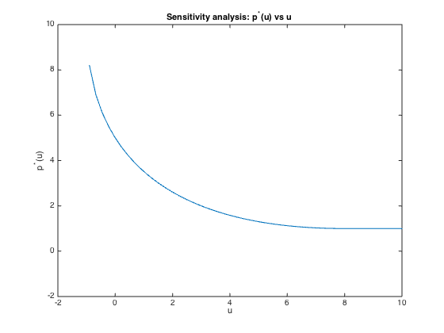

% Boyd & Vandenberghe, "Convex Optimization" % Joëlle Skaf - 08/29/05 % (a figure is generated) % % Let p_star(u) denote the optimal value of: % minimize x^2 + 1 % s.t. (x-2)(x-2)<=u % Finds p_star(u) and plots it versus u. fprintf(1,'Computing p_star(u)...\n '); u = linspace(-0.9,10,50); p_star = zeros(1,length(u)); for i = 1:length(u) disp(['for u = ' num2str(u(i))]); % perturbed problem cvx_begin quiet variable x(1) minimize ( quad_form(x,1) + 1 ) quad_form(x,1) - 6*x + 8 <= u(i); cvx_end % optimal value p_star(i) = cvx_optval; end fprintf(1,'Done! \n'); % Plots plot(u,p_star) axis([-2 10 -2 10]) xlabel('u'); ylabel('p^*(u)') title('Sensitivity analysis: p^*(u) vs u');
Computing p_star(u)... for u = -0.9 for u = -0.67755 for u = -0.4551 for u = -0.23265 for u = -0.010204 for u = 0.21224 for u = 0.43469 for u = 0.65714 for u = 0.87959 for u = 1.102 for u = 1.3245 for u = 1.5469 for u = 1.7694 for u = 1.9918 for u = 2.2143 for u = 2.4367 for u = 2.6592 for u = 2.8816 for u = 3.1041 for u = 3.3265 for u = 3.549 for u = 3.7714 for u = 3.9939 for u = 4.2163 for u = 4.4388 for u = 4.6612 for u = 4.8837 for u = 5.1061 for u = 5.3286 for u = 5.551 for u = 5.7735 for u = 5.9959 for u = 6.2184 for u = 6.4408 for u = 6.6633 for u = 6.8857 for u = 7.1082 for u = 7.3306 for u = 7.5531 for u = 7.7755 for u = 7.998 for u = 8.2204 for u = 8.4429 for u = 8.6653 for u = 8.8878 for u = 9.1102 for u = 9.3327 for u = 9.5551 for u = 9.7776 for u = 10 Done!
